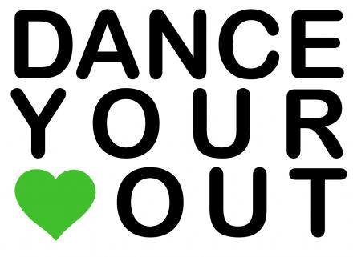

In 2009, the Sophisticated Ladies were founded by three amazing women: Jennifer Peeples, Donnah Laster, and Aundria Williams. Over the last six years, the Sophisticated Ladies have gained two more additional coaches: Eboni Rousell and Brittney McPherson.
There are currently twelve members on the Sophisticated Ladies dance team: Tamia Pettigrew (Choreographer), Imani Broaden (Captain), Skylar Wilkes (Co Captain), Aeria Brown, Summer Boxley, Kaitlyn Gamble, Raven Ingram, Charda Jameson, Delya Soloman, BriAnna Vaughn, Jala Williams, and Caldonia Young.
Dancing along with the Cass Tech Marching Band, the Sophisticated Ladies have always been known for always being in sync and looking glamorous when performing. They keep their heads held high and execute their movements with grace and precision. Here, you will be able to view the Sophisticated Ladies a little more in depth. There are also pictures of the Sophisticated Ladies live and in action for you to enjoy!
